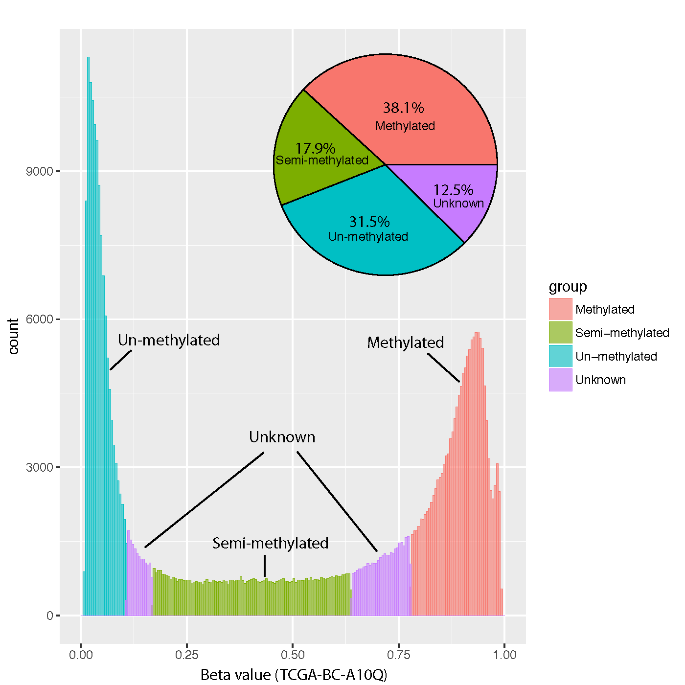

24. beta_trichotmize
24.1. Overview
beta_trichotmize classifies DNA methylation Beta-values into three
methylation states using a three-component Bayesian Gaussian mixture model
(BGMM) fitted independently to each sample.
The input matrix should have CpGs in rows and samples in columns.
The three mixture components are ordered by their fitted means and mapped to:
State |
Label |
Interpretation |
|---|---|---|
|
Unmethylated |
Lowest-mean BGMM component. |
|
Partially methylated |
Intermediate-mean BGMM component. |
|
Fully methylated |
Highest-mean BGMM component. |
|
Unassigned |
Maximum posterior probability is below the assignment cutoff. |
Unlike a fixed Beta-value threshold, classification is based on the posterior probability of the fitted mixture components.
24.2. Algorithm
For each sample, beta_trichotmize fits a Bayesian Gaussian mixture model
with three components. The components are sorted by their means from lowest to
highest methylation.
For each CpG, the model calculates:
\(p_0\) – posterior probability of the unmethylated component
\(p_1\) – posterior probability of the partially methylated component
\(p_2\) – posterior probability of the fully methylated component
The CpG is assigned to the component with the largest posterior probability
only when that probability is at least --prob_cutoff. Otherwise, its state
is -1 (unassigned).
24.3. Input
The input is a tabular Beta-value matrix. Common delimiters and compressed input are supported.
Example:
CpG_ID Sample_01 Sample_02 Sample_03 Sample_04
cg_001 0.831035 0.878022 0.794427 0.880911
cg_002 0.249544 0.209949 0.234294 0.236680
cg_003 0.845065 0.843957 0.840184 0.824286
Requirements:
CpG IDs must be unique.
Sample IDs must be unique.
Finite Beta-values must fall within [0, 1].
Each sample must contain at least three valid and three distinct Beta-values.
24.4. Missing Values
Two missing-value policies are available:
Policy |
Description |
|---|---|
|
Default. Each sample is fitted using its available Beta-values. |
|
Remove every CpG containing a missing value in any sample before model fitting. |
24.5. Usage
Basic usage:
beta_trichotmize \
-i test_05_TwoGroup.tsv.gz \
-o trichotomized
Useful options include:
-c,--prob_cutoff,--prob-cut– minimum posterior probability required for assignment (default: 0.95)-s,--seed– random seed for BGMM fitting (default: 99)--max_iter– maximum BGMM iterations per sample (default: 5000)--tol– convergence tolerance (default:1e-3)--covariance_type {full,tied,diag,spherical}– covariance model (default:full)--weight_concentration_prior– optional Dirichlet-process concentration prior--na_policy {drop,per_sample}– missing-value handling--report– write a BGMM model-summary table--long_format– write one long-format classification table instead of separate state/probability matrices-o,--out_prefix,--output– output prefix
Display all options with:
beta_trichotmize -h
24.6. Output
24.6.1. Matrix format
By default, the command writes five matrices.
For output prefix trichotomized:
trichotomized.methylation_states.tsv– assigned state for each CpG and sampletrichotomized.assignment_probability.tsv– posterior probability of the assigned/best statetrichotomized.probability_0_unmethylated.tsv– posterior probability of state 0trichotomized.probability_1_partially_methylated.tsv– posterior probability of state 1trichotomized.probability_2_fully_methylated.tsv– posterior probability of state 2
State values are 0, 1, 2, or -1 for unassigned CpGs.
24.6.2. Long format
With --long_format, the separate matrices are replaced by:
trichotomized.trichotomized.long.tsv
The table contains:
CpG_IDsamplebeta_valueprobability_0probability_1probability_2assigned_stateassignment_probability
24.6.3. Model summary
With --report, the command additionally writes:
trichotomized.bgmm_summary.tsv
The summary contains one row per sample with component means and weights, convergence information, number of valid CpGs, and numbers of assigned and unassigned CpGs.
24.7. Example Data
24.8. Example Figure
The following example illustrates the distribution of CpGs assigned to the three methylation states.
{kind=link}
